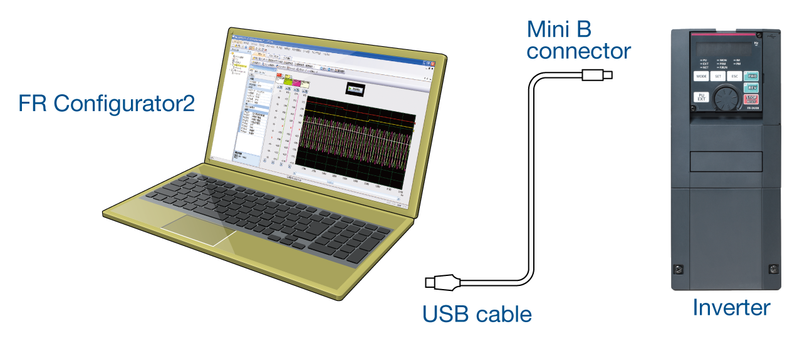
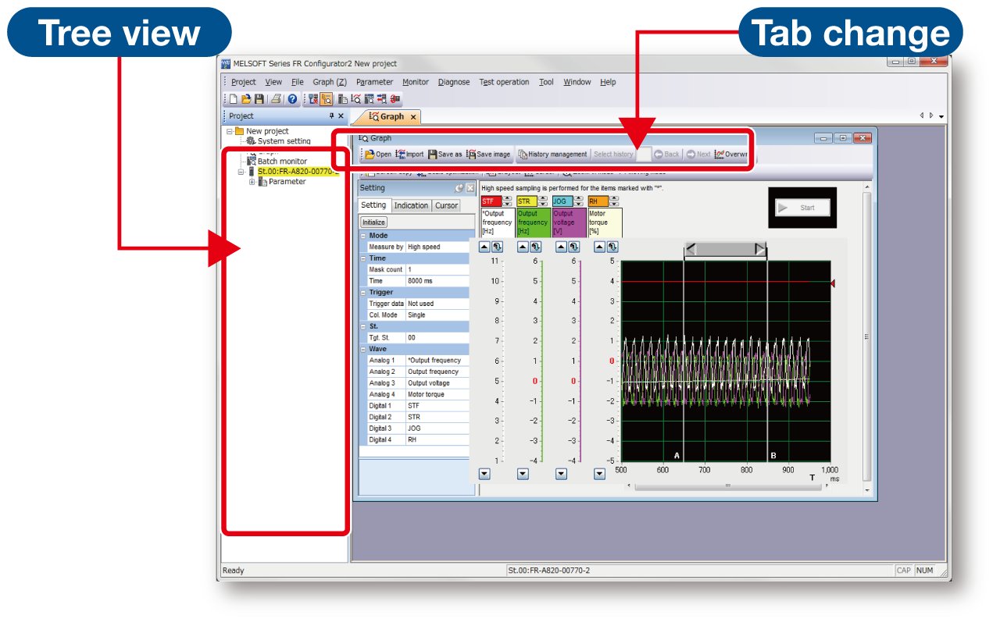
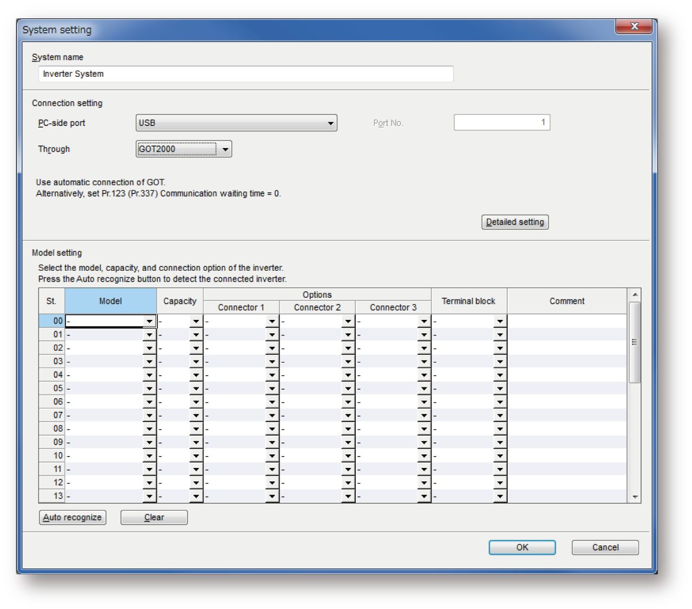
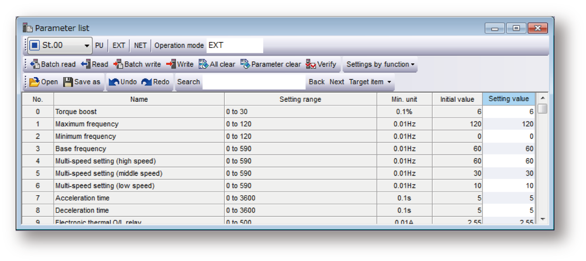
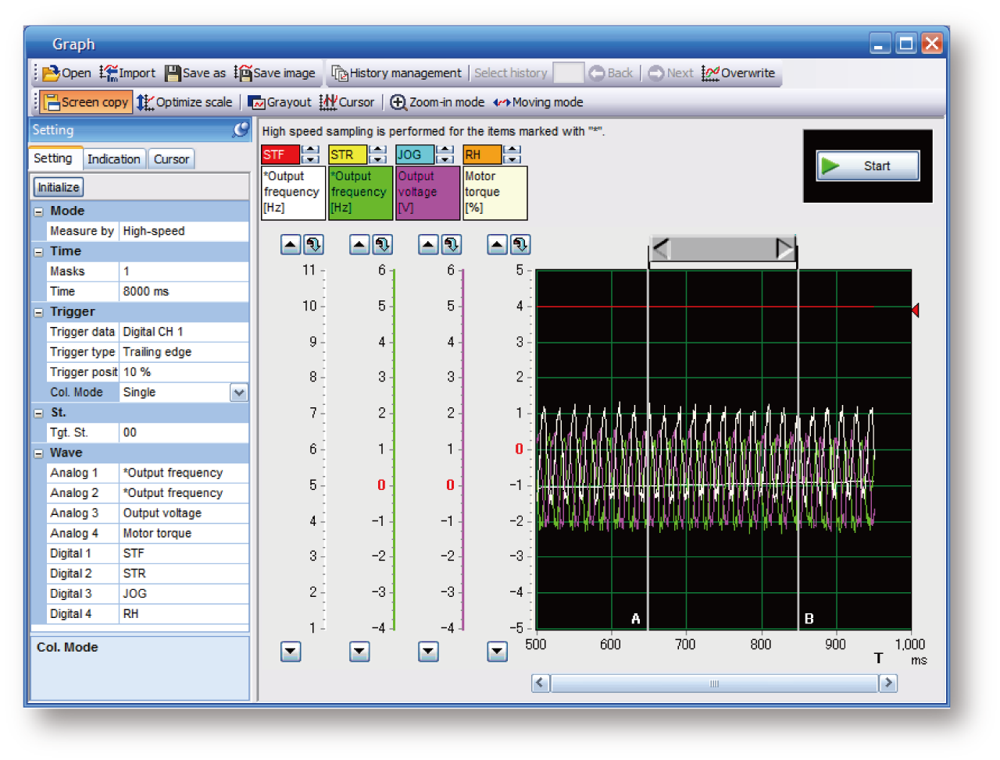

Inverters-FREQROL-A800 Plus Series -FREQROL-A800 Plus for Roll to Roll- Memberikan lingkungan operasi inverter yang nyaman

Urutan operasi inverter disesuaikan untuk mesin
FR Configurator2
■ Koneksi kabel USB yang mudah
Konektor USB (konektor mini B) disediakan sebagai standar. Koneksi dengan komputer pribadi dapat dibuat dengan mudah tanpa menggunakan konverter.
■ Pengoperasian jarak jauh
Mengimpor data jejak atau pengaturan parameter yang telah disalin dalam perangkat memori USB ke FR Configurator2 memungkinkan analisis atau penyesuaian di tempat yang jauh.

■ Antarmuka pengguna yang intuitif
Inverter yang terhubung ditampilkan dalam tampilan pohon. Jendela setiap fungsi dapat diubah menggunakan tab, sehingga memudahkan pengoperasian.

■ Pengaturan awal yang efisien
- Pengaturan sistem
Pengenalan otomatis inverter yang terhubung juga dapat diatur. Nomor stasiun, model, kapasitas, dan opsi plug-in inverter yang terhubung juga dapat diatur secara manual.

■ Penyesuaian pra-operasi dan pemeriksaan operasi yang mudah
- Daftar parameter
Parameter untuk nomor stasiun yang dipilih dapat ditampilkan dan diubah. Sinyal I/O dapat ditetapkan menggunakan pengaturan berdasarkan fungsi.

■ Platform yang mudah dipahami memudahkan perawatan
- Fungsi grafik
Data inverter dapat diambil sampelnya dan ditampilkan dalam format grafik. Data jejak juga dapat dibaca dan ditampilkan dalam grafik.
